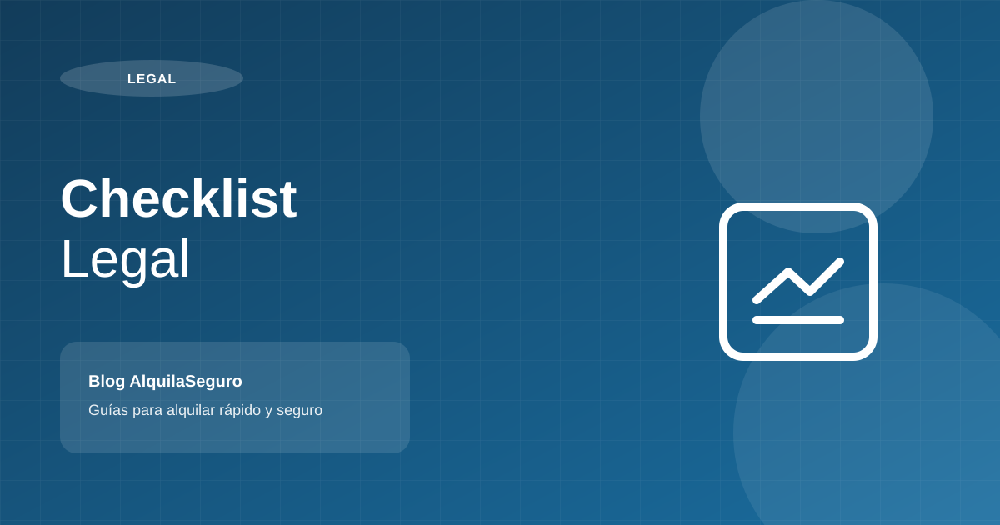

Arbitrios: quién los paga en un alquiler y cómo pactarlo en el contrato

En resumen
Los arbitrios son tasas municipales por limpieza pública, parques y jardines y serenazgo. Ante la municipalidad, el obligado es el propietario aunque el depa esté alquilado. Puedes pactar en el contrato que el inquilino los asuma o reembolse, pero ese acuerdo solo vale entre ustedes: si no paga, la deuda sigue siendo tuya.
¿Qué son los arbitrios?
Los arbitrios son un tipo de tasa municipal. El Texto Único Ordenado de la Ley de Tributación Municipal (Decreto Supremo 156-2004-EF) los define, en su artículo 68, como las tasas que se pagan por la prestación o el mantenimiento de un servicio público individualizado en el contribuyente.
En Lima, los arbitrios suelen cubrir tres servicios:
- Limpieza pública: recojo de residuos y barrido de calles.
- Parques y jardines públicos.
- Serenazgo o seguridad ciudadana.
Cada municipalidad fija sus montos cada año mediante ordenanza, según criterios como el uso, el tamaño y la ubicación del predio. Por eso, dos departamentos parecidos en distritos distintos pueden pagar montos diferentes.
Arbitrios e impuesto predial: no son lo mismo
Impuesto predial: es un impuesto anual sobre el valor del inmueble (autovalúo). Lo paga quien es propietario al 1 de enero de cada año; si vendes durante el año, el comprador recién asume el impuesto desde el 1 de enero siguiente. Si el predio está alquilado, lo sigue pagando el dueño.
Arbitrios: son tasas por servicios municipales. En el Cercado de Lima, el SAT indica que son de periodicidad mensual y se recaudan por trimestres. Tras una venta, el SAT señala que el nuevo propietario debe pagarlos desde el mes siguiente a la transferencia.
Ninguno de los dos es el impuesto a la renta por alquilar, que se paga a SUNAT. Para ese tema revisa nuestra guía del impuesto al alquiler 2026 en SUNAT.
¿Quién paga los arbitrios cuando el departamento está alquilado?
Ante la municipalidad, el propietario. La regla la fija la ordenanza de cada distrito y, en general, apunta al dueño. Por ejemplo, el SAT de Lima explica, citando la Ordenanza 562 para el Cercado de Lima, que son contribuyentes de los arbitrios los propietarios de los predios cuando los habitan, cuando están desocupados o cuando un tercero los usa bajo cualquier título. Un alquiler es justamente uno de esos casos. El poseedor solo pasa a ser contribuyente cuando no es posible identificar al propietario.
Además, el Código Tributario (artículo 26) establece que los acuerdos por los que el deudor tributario traslada su obligación a un tercero no tienen efecto frente a la administración tributaria. En la práctica:
- La deuda de arbitrios queda registrada a tu nombre, no al de tu inquilino.
- Si no se paga, la municipalidad te cobrará a ti, con intereses y, eventualmente, por cobranza coactiva.
- Lo que pactes con el inquilino te sirve para reclamarle a él, no para liberarte frente a la municipalidad.
Regla práctica: aunque el inquilino se encargue de pagar, revisa tu estado de cuenta municipal al menos cada trimestre.
¿Puedo pactar que el inquilino pague los arbitrios?
Sí. Es un acuerdo válido entre las partes. Lo importante es que el contrato lo diga de forma expresa. El artículo 1681 del Código Civil obliga al inquilino a pagar los servicios públicos que se consumen en el inmueble, pero no conviene depender de esa norma para los arbitrios: es mejor nombrarlos en el contrato.
Tienes tres formas comunes de pactarlo:
- Incluidos en la renta: tú pagas los arbitrios y lo consideras al fijar la renta. Es la opción más simple y la que menos riesgo de deuda te genera.
- Reembolso: tú pagas y el inquilino te reembolsa contra la copia del recibo, en un plazo definido.
- Pago directo del inquilino: él paga y te envía la constancia. Requiere más seguimiento de tu parte.
Ten en cuenta el efecto tributario: según SUNAT, el monto de los tributos que asume el inquilino y que legalmente corresponden al arrendador forma parte de tu renta de primera categoría. Si el inquilino paga tus arbitrios, ese monto se suma a lo que declaras.
¿Prefieres que expertos se encarguen del contrato, el inquilino y la cobranza? Conoce Proper Rentas.
Conocer Proper RentasCláusula de referencia para los arbitrios
Adáptala a la opción que elijas y revísala con un abogado:
Tributos municipales (modelo referencial). El impuesto predial es de cargo de EL ARRENDADOR. Los arbitrios municipales que se generen durante la vigencia del contrato serán reembolsados por EL ARRENDATARIO a EL ARRENDADOR dentro de los [ ] días siguientes a la presentación de la copia del recibo correspondiente. El incumplimiento de este reembolso podrá descontarse de la garantía al término del contrato.
Puedes ver cómo encaja esta cláusula en un contrato completo en nuestro modelo de contrato de alquiler.
Buenas prácticas para propietarios
- Antes de alquilar, verifica que no tengas deuda de predial ni arbitrios. Es parte de nuestro checklist legal.
- Deja por escrito quién paga arbitrios, predial y cuota de mantenimiento.
- Guarda los recibos y constancias de pago de todo el contrato.
- Al recibir el depa de vuelta, revisa que no queden arbitrios pendientes del periodo de alquiler antes de devolver la garantía.
Si quieres repasar qué más le corresponde a cada parte, lee nuestra guía sobre arrendador y arrendatario.
Preguntas frecuentes
¿Quién paga los arbitrios, el propietario o el inquilino?
Ante la municipalidad, el obligado es el propietario, aunque el departamento esté alquilado. Con el inquilino puedes pactar que los asuma o los reembolse, pero ese acuerdo solo vale entre ustedes.
¿Qué pasa si el inquilino se comprometió a pagar los arbitrios y no lo hizo?
La deuda queda a nombre del propietario y la municipalidad se la cobrará a él, incluso por cobranza coactiva. Luego el propietario puede reclamar al inquilino lo pactado, por ejemplo descontándolo de la garantía si el contrato lo permite.
¿Los arbitrios son lo mismo que el impuesto predial?
No. El impuesto predial grava la propiedad del inmueble según su autovalúo y lo paga quien es propietario al 1 de enero. Los arbitrios son tasas por servicios municipales como limpieza pública, parques y jardines y serenazgo.
¿Si el inquilino paga los arbitrios, pago más impuesto a la renta?
Según SUNAT, los tributos que asume el inquilino y que legalmente corresponden al arrendador forman parte de la renta de primera categoría. Por eso conviene considerarlos al calcular tu impuesto.
¿Cada cuánto se pagan los arbitrios?
Lo define cada municipalidad. En el Cercado de Lima, el SAT indica que son de periodicidad mensual y se recaudan por trimestres, con opción de pago al contado.
Fuentes
- Gob.pe (SAT de Lima) - Información de Impuesto Predial y Arbitrios
- MEF - Decreto Supremo 156-2004-EF, TUO de la Ley de Tributación Municipal
- SUNAT Orientación - Renta de primera categoría
- El Peruano - Impuesto predial 2026: cuándo y cómo pagar
- Congreso de la República - Código Civil (Decreto Legislativo 295)